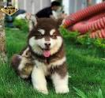

Bật mí tên các loại chó cảnh đẹp nhất trên thế giới
-

Chó Pitbull (American Pit Bull Terrier)
Pitbull có nguồn gốc từ Anh, sau đó được đưa sang Mỹ và huấn luyện để trở thành giống chó chiến và cho đến ngày nay, chúng đã được thuần hóa để nuôi làm cảnh trong nhà. Mặc dù nổi tiếng với sự hung dữ nhưng ngoại hình cơ bắp, rắn rỏi của chúng được rất nhiều người yêu thích và lọt top tên các loại chó cảnh đẹp nhất. Ở Việt Nam, Pitbull thuần chủng có giá khá mềm chỉ từ 6 triệu đồng. Tuy nhiên, trước khi quyết định nuôi bạn cần đảm bảo sẽ dành thời gian huấn luyện chúng.
-

Chó Alaska (Alaskan Malamute)
Không lấy làm lạ khi chú chó tuyết Alaska là một trong những ứng viên nắm giữ vị trí đầu bảng danh sách tên các loại chó cảnh đẹp trên thế giới. Là một nhánh của giống chó sói tuyết Bắc Cực, lại trải qua quá trình lai tạo với các giống chó to hơn, Alaska ngày nay sở hữu vẻ ngoài dũng mãnh, sự dẻo dai và nhanh nhẹn đáng kinh ngạc.Là giống chó cảnh được săn đón nên Alaska có giá bán khá cao, từ 9 triệu đồng cho một bé chó con.
-
Chó Husky (Husky Siberian)
Cũng là dòng chó kéo xe với bộ lông dày và dáng vẻ oai vệ, không ít người nhầm lẫn chó Husky với Alaska. Tuy nhiên, nếu quan sát kỹ bạn sẽ nhận thấy Husky có khuôn mặt dữ dằn và bộ lông ngắn hơn, vì thế trông chúng có vẻ nhỏ bé hơn hẳn, thậm chí chỉ bằng 1 nửa hoặc 1/3 so với Alaska.Dù trông hoang dã, lạnh lùng là vậy nhưng tính cách của loài chó tuyết này cực kỳ hiền lành và thân thiện, thậm chí còn được hội yêu thú cưng gọi là “thánh biểu cảm”. Chính vì vậy chúng được lòng người nuôi chó về cả vẻ đẹp lẫn sự đáng yêu của mình. Giá bán của một bé Husky con khoảng 7 triệu đồng.
-

Chó Samoyed
Thêm một cái tên chứng tỏ sức hút của loài chó tuyết xứ Siberia, đồng thời cũng là họ hàng gần gũi với Alaska và Husky. Vẻ đẹp của Sam (cách gọi thân thiết của Samoyed) đến từ bộ lông trắng muốt như tuyết, thân hình cân đối và khuôn mặt hiền lành, thân thiện. Samoyed ngày nay đã thích nghi tốt hơn với khí hậu nhiệt đới ở Việt Nam và trở thành giống thú cưng mà bất kỳ ai cũng mong muốn sở hữu. Giá bán cho một bé Sam thuần chủng từ 8 triệu đồng.
-
Chó Corgi
Chó Corgi có nguồn gốc từ xứ Wales của nước Anh, được công nhận là giống chó chân ngắn đẹp nhất thế giới. Những chiếc chân ngắn ngủn, cặp mông to và cả khuôn mặt ngộ nghĩnh là những điểm giúp Corgi dễ dàng “hạ gục” người yêu chó. Corgi hiện đang rất được ưa chuộng tại Việt Nam, mặc dù giá bán của chúng không dưới 15 triệu.